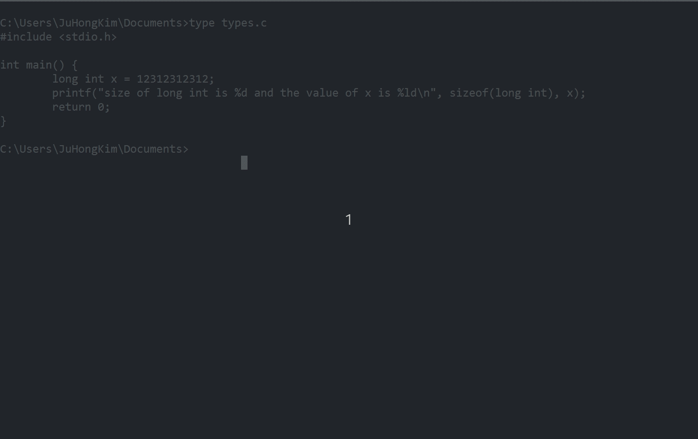

Note: This is a follow up post from my microblog
WARNING: I am no expert in Assembly. The last and only time I ever wrote assembly was computing the Fibbonacci Sequences 8 years ago for the MIPS architecture
The following below has a value that is vague:
char i = -1;
The issue with the above line is that the value of i is not immediately obvious as compilers for different architectures could treat this as signed or unsigned.
The signedness of a data type can be simply thought as whether or not there is a dedicated sign bit that indicates whether or not the number is postive or negative.
A Quick Review of Signedness
The size of char is 1 byte as defined in the C specification (C99 3.7.1) which corresponds to 8 bits.
This effectively gives char the ability to represent 28 = 256 values which is more than enough to represent all 128 characters of ASCII and other
encodings that slightly extended ASCII to utilize the other remaining unused slots (i.e. ASCII utilizes only maps to 128 values) such as JIS X 0201.
There are different ways to represent negative numbers but the most common, at least from what I recall, is that negative numbers are represented using two’s complements. From what I read online, it would seem that the advantage of two’s complement is that we can treat operations on the numbers the same regardless if it is negative or positive. This also allows us to not have a concept of negative 0 which would be quite odd to deal with.
Two’s complement is quite simple but it does require you to be familiar with binary since that is how computers represent any piece of data. The most significant bit (the left most bit) represents whether the number is negative or not. If set (i.e. set to 1 or true), then the number is negative and we must apply two’s complement to retrieve the number in decimal.
In our case, let’s look at how -1 is represented using two’s complement: 1111 1111 or 0xFF
- Invert all bits:
1111 1111 => 0000 0000 - Add 1:
0000 0000 0000 0001 --------- 0000 0001
Since the result is a 1 and we know the most significant bit was set (or else we would not have to do 2’s complement), 1111 1111 represents -1
Signedness of Char in ARM
In Robert Love’s section on “Signedness of Chars” (Chapter 19 - Portability) of his book on the Linux Kernel Development, he notes that on some systems such as in ARM
would treat char as unsigned which goes against the logic of us AMD64 (x86-64) programmers. Effectively, the value of i will be stored as 255 rather than -1.
The reason for this is apparently due to performance.
Let’s verify this on my Raspberry Pi 4 machine running Linux:
char i = -1;
if (i == 255) {
printf("char is unsigned\n");
}
if (i == -1) {
printf("char is signed\n");
}
Result: char is unsigned
Let’s examine under the hood (using Godbolt GCC 14.2 with no optimization enabled):
unsigned char i = -1;
signed char j = -1;
The corresponding assembly is:
; unsigned char i = -1;
mov w0, #0xffffffff // #-1
strb w0, [sp, #15]
; signed char j = -1
mov w0, #0xffffffff // #-1
strb w0, [sp, #14]
As you can observe, both signed and unasigned char results set of instructions to store its value. The differences should be the way the compiler treats each variable such as utilizing the signed or unsigned instructions.
i++;
j++;
The corresponding assembly is:
; i++
ldrb w0, [sp, #15] ; w0 = -1 = 255 (treated as unsigned)
add w0, w0, #0x1 ; let's ignore the fact it'll ovevrflow
strb w0, [sp, #15]
;j++
ldrsb w0, [sp, #14] ; w0 = -1 (treated as signed)
and w0, w0, #0xff
add w0, w0, #0x1
and w0, w0, #0xff
strb w0, [sp, #14]
As we can see, the variable signed j utilizes ldrsb instead of ldrb to load a signed byte and generates significatly more instructions than incrementing
the unsigned i.
Let’s focus our attention to ldrsb which is loading the value (a byte) pointed by sp - 14 which corresponds to
the value of j. 0xFF is 255 if we treat it as unsigned but we must be able to distinguish between the number 255 and -1.
Recall that w0 is a 32 bit register but we are only loading a single byte which is 8 bits long.
This is where the sign extend
comes into the story.
ldrb w0, #0xff will look like the following:
| 31 | 30 | 29 | 28 | 27 | 26 | 25 | 24 | 23 | 22 | 21 | 20 | 19 | 18 | 17 | 16 | 15 | 14 | 13 | 12 | 11 | 10 | 9 | 8 | 7 | 6 | 5 | 4 | 3 | 2 | 1 | 0 |
|---|---|---|---|---|---|---|---|---|---|---|---|---|---|---|---|---|---|---|---|---|---|---|---|---|---|---|---|---|---|---|---|
| 0 | 0 | 0 | 0 | 0 | 0 | 0 | 0 | 0 | 0 | 0 | 0 | 0 | 0 | 0 | 0 | 0 | 0 | 0 | 0 | 0 | 0 | 0 | 0 | 1 | 1 | 1 | 1 | 1 | 1 | 1 | 1 |
| 0 | 0 | 0 | 0 | 0 | 0 | F | F | ||||||||||||||||||||||||
Notice how bits 8-31 are set to 0, this is what we call zero-extends whereby the byte value is extended with 0s to obtain a 32-bit word.
Meanwhile for ldrsb, it loads the byte and then sign extend to 32 bits with 1s by setting the upper remaining bits 8-31 to 1:
| 31 | 30 | 29 | 28 | 27 | 26 | 25 | 24 | 23 | 22 | 21 | 20 | 19 | 18 | 17 | 16 | 15 | 14 | 13 | 12 | 11 | 10 | 9 | 8 | 7 | 6 | 5 | 4 | 3 | 2 | 1 | 0 |
|---|---|---|---|---|---|---|---|---|---|---|---|---|---|---|---|---|---|---|---|---|---|---|---|---|---|---|---|---|---|---|---|
| 1 | 1 | 1 | 1 | 1 | 1 | 1 | 1 | 1 | 1 | 1 | 1 | 1 | 1 | 1 | 1 | 1 | 1 | 1 | 1 | 1 | 1 | 1 | 1 | 1 | 1 | 1 | 1 | 1 | 1 | 1 | 1 |
| F | F | F | F | F | F | F | F | ||||||||||||||||||||||||
After loading the byte (as signed) to w0, there are two extra instructions that differs between adding a signed and unsigned integer:
and w0, w0, #0xff
add w0, w0, #0x1
and w0, w0, #0xff
As to why these instructions are necessary is still something that is not clear to me why it is necessary to “truncate” w0 such that
all bits after the first 8 are set to 0 (if I understood this correctly). I know we are only interested on adding onto a single byte
but I was under the impression that truncation wouldn’t be necessary as we are using strb to store the result back to memory.
Of course, I expect these and instructions to not exist when we tune the optimization.
As this is a simple program, I do not think it’s worth the effort to look into this in further details.
Unsigned Char in Other Architectures
ARM is not the only unique architecture that treats char as unsigned. trofi also did a nice
overview of looking at the signedness of other architecture after encountering a bug in SQLite whereby SQLite would hang
(i.e. be stuck in an infinite loop) on PowerPC architecture. After looking at various architecture, he concluded that ARM, PowerPC, and s390 have unsigned char.
Signedness based on OS
The size and range for each data types is not solely based architecture as different OS could impose their own limits as well. On the same architecture,
the size of int does differ between 64-bit Windows and 64-bit Linux (i.e. LP64 v.s. LLP64).
So amongst common 64 bit OSes, there are two different implementations of the sizes of int, long and long long. UNIX-based systems tend to use length of 4/8/8 (in bytes, as returned by sizeof()), whereas Windows uses 4/4/8. In a different terminology, 4/8/8 is called LP64 (long and pointers 64 bit) and 4/4/8 is LLP64 (long long and pointers 64 bit).

The differences between the size of `long int` on Linux and Windows
I do not have a Windows running on ARM processor to know what would be the signedness of char but as for MacOS, I did manage to ask a random stranger to confirm
the signedness. Interestingly, MacOS running on its ARM chips such as the M3 treat char as signed.
In QNX on ARM, char is unsigned as I expected, it’s just MacOS being weird. I wonder if there is a technical or historical reason for this. Perhaps this was due
to the desire to port x86 code to ARM by emulating portability differences between the two architecture but that’s just speculation on my part.
Conclusion
Therefore to make your code portable, one should ensure to explicitly state whether or not char is signed or unsigned instead of making assumptions if they know
their char will lie outside of 0 to 127. All that the C standard guarantees is that its size is 1 byte.
Resources:
- Linux Kernel Development by Robert Love
- http://computerscience.chemeketa.edu/armTutorial/Memory/LoadStoreBytes.html
- https://developer.arm.com/documentation/102374/0102/Loads-and-stores—zero-and-sign-extension
- https://learn.microsoft.com/en-us/cpp/cpp/data-type-ranges?view=msvc-170
- https://abstractexpr.com/2023/04/30/the-anomaly-of-the-char-type-in-c/